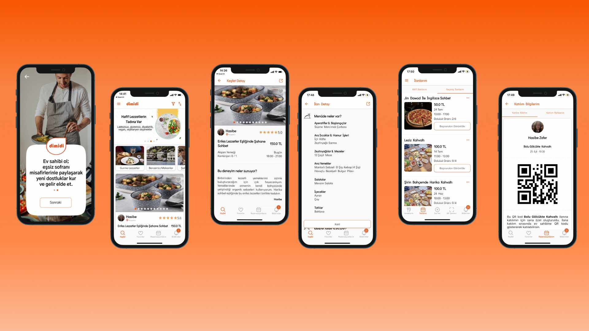
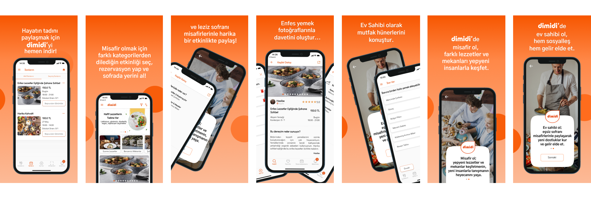

<div id="portfolio-page" class="portfolio-page-content">
    <div class="container">
        <div class="portfolio-nav">
            <div id="portfolio-close-button" class="portfolio-close-button">
                <a href="#portfolio"><i class="fa fa-close"></i></a>
            </div>
        </div>

        <div class="portfolio-title">
            <h1>What did I do in the Dimidi Project? 👩🏽‍💻</h1>
        </div>

        <div class="row">


            <div class="col-sm-12 col-md-12 portfolio-block">
                <!-- Project Description -->
                <div class="block-title">
                    <h3>Dimidi Social Dining Mobile Application</h3>
                </div>


                <p class="text-justify  portfolio-block-description">Dimidi is a social dining mobile application that
                    combines food and socialization. </p>
                <p class="text-justify  portfolio-block-description">I worked in all phases of transforming the project
                    from idea to product. I worked on writing the analysis of the application, designing mobile
                    interfaces on figma, developing the application with Flutter, application publishing processes,
                    publishing the application on social media.</p>

                <div class="block-title">
                    <h3><br>Mobile UI with Figma</h3>
                    <p class="text-justify  portfolio-block-description">The application consists of 100+ screens. I
                        designed the application UI in Figma. You can see sample screens below.</p>
                </div>
            </div>

            <div class="one-image">
                
            </div>

            <div class="block-title">
                <h3><br>Development with Flutter</h3>
                <p class="text-justify  portfolio-block-description">The Dimidi project was first developed as Android and iOS. In this process, I developed the Android application end-to-end. It was later converted to the Flutter project. During this period, I worked on the Flutter development team.</p>
                <p class="text-justify  portfolio-block-description"> <br> <a href="https://onelink.to/dimidi">Dimidi Mobile Application</a> </p>

            </div>

            <div class="block-title">
                <h3><br>Application Release Processes</h3>
                <p class="text-justify  portfolio-block-description">I prepared the store images during the publishing process of the Dimidi application in the Google Play Store and Apple Store. I wrote the store description texts. I used tools like data.ai to choose the right keyword for ASO. You can see the store image below.</p>
            </div>

            <div class="one-image">
                
            </div>

            <div class="block-title">
                <h3><br>Social Media Management</h3>
                <p class="text-justify  portfolio-block-description">I prepared the social media content of the Dimidi application using Canva. Application promotional videos, event visuals. In this process, I used social media advertising and sharing tools using Facebook Business Suite and Instagram Business. <br> <br> <a href="https://www.instagram.com/dimidiapp/">Dimidi on Instagram</a> </p>
            </div>

            <div class="block-title">
                <h3><br>Dimidi Web Site</h3>
                <p class="text-justify  portfolio-block-description">I prepared a static landing page for the promotion of Dimidi. I used a ready-made website template here. I placed Dimidi images on the site using Figma and Adobe Photoshop. I wrote the promotional texts of the website. I made promotional videos using Canva and put them on the website.<br> <br> <a href="http://dimidisocialdining.com/">Dimidi Website</a> </p>
            </div>


        </div>


    </div>
</div>
